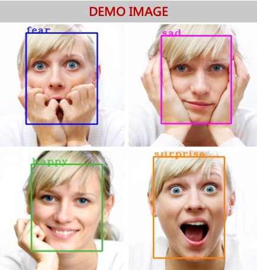

Human Emotion Classifier
Tarushree Gandhi: 903527176, Zayra Lobo: 903054233, Sanmeshkumar Udhayakumar: 902969263Fall 2019 CS 6476 Computer Vision: Class Project
Georgia Tech
Abstract
The goal of our project is to create a human emotion classifier for headshot images of people. For example, if the input is an image of a person with a sad expression, the classifier should output that the detected emotion is sadness. The motivation behind solving this problem is to automatically detect undesired human emotion that can further be used as a feedback to improve systems that use human emotions, for example customer satisfaction. This can be applied to businesses automatically being alerted about customers being unsatisfied with their service. The approach involves using the CK+ dataset of facial emotion images (which provides eight emotion labels based on facial expression), detecting and cropping the face from the image, extracting the facial descriptors in the images using Scale-Invariant Feature Transform (SIFT) descriptors, clustering and creating a bag of words description histogram of each image, and then training an SVM model to identify human emotions based on these bag of words description histograms. We have completed all these steps so far, except for training the SVM model and we have presented a proof of concept correlation experiment with the histograms to see if they have the potential to classify emotions. The main result we have obtained so far is that except for a few cases, the correlation experiments show that the histograms have the potential to classify emotions, indicating that feeding these histograms to an SVM model will potentially lead to the SVM model successfully classifying the histograms into different emotions.Teaser Output Image (from this article)

Introduction
Customer feedback is an important mechanism for businesses to continue to improve, but filling out surveys in order to provide such feedback is often perceived as a nuisance to customers. If businesses could instead detect the emotion of their customers by simply taking an image of their face while they speak with customer service, then the customers would be able to save time by not filling out a survey and the business would be able to collect more feedback. Thus, we are implementing a human emotion classifier for a headshot photograph of a person. Our classifier will use grayscale photographs as input, and we will be using the CK+ database along with machine learning techniques in order to create our classifer. We will report the overall accuracy of our classifier and the accuracy on a class-by-class basis so that we make observations such as which emotion is most difficult to classify based on this dataset.Approach
- CK+ Database: For our experimental setup, we used the CK+ (Extended Cohn-Kanade Dataset) database that is publicly available. It contains grayscale images of closeups of different people’s faces, with 8 different emotion labels: neutral, sadness, surprise, happiness, fear, anger, contempt and disgust.
- Face cropping: The face is cropped from the headshot image, as that is the indicator of emotion we will be using. In order to implement Face Detection, we used the Haar Cascade classifier to get the face coordinates. Then, we cropped the face using these coordinates.
For the image preprocessing step where faces are cropped and normalized, we exploited the Haar Cascade face classifier code set, which is a trained classifier for detecting objects, including faces.
- Facial feature extraction: We extracted features from the cropped face using Scale-Invariant Feature Transform (SIFT) descriptors. In order to extract these descriptors, we exploited the OpenCV SIFT functions.

- Clustering the features and BoW featurization: We clustered the features using Python's sklearn kmeans in order to get K-representative “visual words”. We then transformed this in a bag-of-words representation as a histogram of the occurrence of these words in an image. This is to represent the features of an image in a compact vector.
It should be noted that the histogram below only has five clusters, but the final version of our classifier will likely have many more.
- SVM Classification: Finally, we implement a machine learning model using Python's sklearn SVM classifier. We will train SVM using the histograms generated in the previous step. 70% of the dataset will used as a training set, 20% as validation set, and the rest 10% as the test set.
- Model Evaluation on Test dataset: We will test the emotion classifier on the remaining 10% of the test dataset.

We decided to use SIFT for feature detection and BoW for featurization because an approach using these methods for human emotion classification has already been designed and used successfully, as can be seen here.
One obstacle we encountered while developing this approach was finding the whole set of images for each emotion, because each image for a particular emotion is in a random directory. Also the emotion labels for each image is in a different but correlated directory from the actual image, so we had to write a script that would manually go through the directory of images and create a text file of directory paths of images for each emotion. For example, a text file called “anger.txt” would have all the image paths for angry emotion images.
Experiment and Results
Proof-of-Concept Results
In order to create a proof-of-concept on whether the histograms of the descriptors in each image can indicate to machine learning models the type of emotion in that image, we selected three sets of images from the CK+ database:Set1 = 20 images of emotion 1
Set2 = 20 other images of emotion 1
Set3 = 20 images of emotion 2
The descriptors in the combined set of these images were clustered into 20 clusters in order to perform dimension reduction and keep the bag of words description of each image small. Then a histogram was created for each image of the total number of each "word" present in that image.
Then we measured the correlation between the following using the numpy corrcoef() function:
Set1 and Set2 (Set1_2 correlation): We expect this to be a high correlation close to 1, cause the correlation is between images of the same emotion.
Set1 and Set3 (Set1_3 correlation): We expect this to be a correlation lower than that of Set1_2, since Set1_3 is comparing sets of different emotions.
Set2 and Set3 (Set2_3 correlation): We expect this to be a correlation lower than that of Set1_2, since Set2_3 is comparing sets of different emotions.
Below are the correlation results for the two happy and one sadness data sets. The correlation was as expected, with the two sets of happy data sets being highly correlated while the correlation of either happy set with the sadness set was much lower. Examples of the input images with SIFT keypoints drawn on them and the histograms used for correlation can be found in the Qualitative Results section.
Happy (Set 1) vs. Happy (Set 2) correlation: 0.81 (highest correlation, close to 1)
Happy (Set 1) vs. Sadness (Set 3) correlation: 0.49 (lower than Set1_2)
Happy (Set 2) vs. Sadness (Set 3) correlation: 0.38 (lower than Set1_2)
Correlations were taken between some other random combinations of emotions as well, and in almost every case, the correlations were as expected. These results indicate that the histograms of the descriptors in each image can determine the type of emotion in an image.
Note that in the correlation table below, every set of correlation in each row follows the title format of "Set1_2 correlation", "Set1_3 correlation", and "Set2_3 correlation". Also note that the correlation of happy1happy2 in the happy vs. sadness column will be different than the happy1happy2 correlation in the happy vs. disgust column, because the data was clustered differently in each of the experiments.
Observations:
- We noticed as k clusters and number of images were increased, the correlation behaved in a more expected way. This makes sense because the more data there is available and the more clusters there are, the more accurately the descriptors can become labelled as features, and can represent the images better.
- The emotions that had the least correlation difference were emotions that were similar. For example, the disgust correlation in red between disgust and anger doesn’t behave as expected since it is bigger than the correlation between the two sets of disgust images. This is explainable because disgust and anger are both negative emotions that can be similar. Meanwhile, disgust and surprise are more distinct emotions with 1 being negative and 1 being positive, and this is indicated by the large difference in correlation.
| Exp no. | Emotions | Correlation | Emotions | Correlation | Emotions | Correlation |
|---|---|---|---|---|---|---|
| Exp 1 | Happy1,Happy2 | 0.81 | Happy1,Sad1 | 0.49 | Happy2,Sad1 | 0.38 |
| Exp 2 | Happy1,Happy2 | 0.80 | Happy1,Disgust3 | 0.79 | Happy2,Disgust3 | 0.55 |
| Exp 3 | Happy1,Happy2 | 0.86 | Happy1,Anger3 | 0.79 | Happy2,Anger | 0.79 |
| Exp 4 | Happy1,Happy2 | 0.88 | Happy1,Surprise3 | 0.54 | Happy2,Surprise3 | 0.32 |
| Exp 5 | Disgust1,Disgust2 | 0.82 | Disgust1,Anger3 | 0.84 | Disgust2,Anger3 | 0.81 |
| Exp 6 | Disgust1,Disgust2 | 0.76 | Disgust1,Surprise3 | 0.64 | Disgust2,Surprise3 | 0.39 |
| Exp 7 | Disgust1,Disgust2 | 0.75 | Disgust1,Fear3 | 0.74 | Disgust2,Fear3 | 0.57 |
| Exp 8 | Disgust1,Disgust2 | 0.84 | Disgust1,Happy3 | 0.78 | Disgust2,Happy3 | 0.72 |
Final Experiment Plan
Our final experiment will run as follows. We will have our emotion classifier try to identify human emotions for a set of images that our machine learning model hasn’t trained on. This experiment will reveal how accurate our emotion classifier is at identifying human emotions from images. The set we will test on will have to be large enough to not have results biased towards identifying only a certain group of people, and this set sample size will be determined as we further explore the CK+ dataset. What we would define as success for this experiment is correctly identifying 50% of these images. This % of accuracy is tentative, as we aren't sure how accurate our human classifier will end up being in the limited time we have.Qualitative Results
Happy Face Keypoints:
Sadness Face Keypoints:

Histogram of Clusters of Descriptors in Each Set (Bag of Words)
Conclusion and Future Work
Overall, the correlation experiments show that the bag of words histograms created to describe each image can indicate to machine learning models the type of emotion in an image, three sets of images were taken. The next steps would be to actually get the bag of words histograms for all images and then feed that into SVM machine learning model to train it to identify the emotions in an image. We will experiment also with different number of clusters in the clustering step in order to make the machine learning model more accurate.References
OpenCV Tutorial on Face Detection using Haar CascadesArticle about Classifying Human Emotions using Machine Learning
OpenCV Tutorial on SIFT